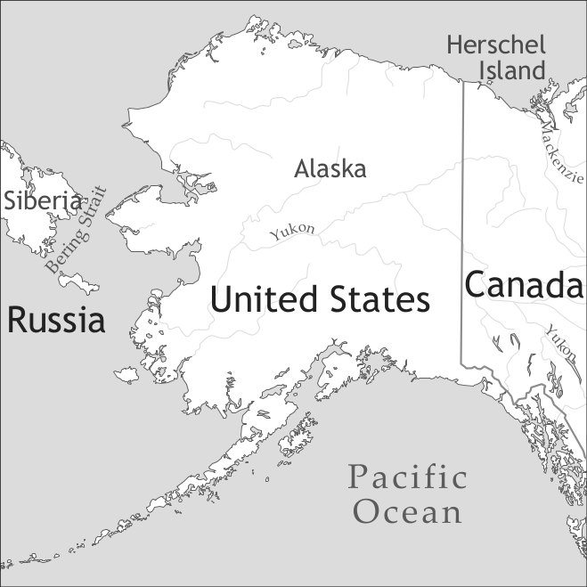

by Hein van der Voort

The Eskimo languages were the lexifier languages of a number of pidgins used in interethnic contacts in the Arctic region. Traces of Eskimo-based pidgins (henceforth Eskimo pidgins) have been recorded at least since the 17th century and up until the 20th century, albeit very rarely and extremely fragmentarily. In several cases, the Europeans who documented Eskimo Pidgin were not aware of its pidgin status, but thought that they documented an Eskimo language. The only conscious and serious attempt at the documentation and analysis of an Eskimo Pidgin is the article by Vilhjálmur Stefánsson (1909) on the so-called Eskimo Trade Jargon of Herschel Island, which is based mainly on North Alaskan Iñupiaq, Siglitun (the Mackenzie dialect of Western Canadian Inuktun), and English, but which also contains words of Athabaskan, Hawaiian, Portuguese, and Scandinavian origin, some of which may have come via other pidgins.
In this survey, the Eskimo Trade Jargon of Herschel Island is taken as the main representative for Eskimo Pidgin. The data collected by Stefánsson (1909) are the most complete and extensive for any Eskimo Pidgin. For this reason, it was also the main source for other secondary studies of Eskimo-based contact languages (e.g. Drechsel 1981, Drechsel & Makuakāne 1982, Wurm 1992). Furthermore, there are a considerable number of additional sources of this Pidgin or of closely related pidgins that were spoken in the same region and era, such as Faber (1916), Kelly & Wells (1890), Murdoch (1892), Ray (1885), Rosse (1883), and Van Valin (1945).
Among the studies on Eskimo Pidgins in other regions are, according to region: northeastern Siberia - de Reuse (1996); eastern Canada - Bakker (1996a), Dorais (1996); Greenland - Petersen & Rischel (1987), van der Voort (1996b). The text section in this survey contains a dialogue in 18th century West Greenlandic Pidgin.
In this survey, the term Eskimo is used as a general term to refer to the languages that belong to the Eskimo branch of the Eskimo-Aleut linguistic family. In linguistics, Inuit is used as a general term for the dialect continuum of northern Alaska, the Canadian Arctic, and Greenland, which represents only one of the Eskimo languages. The term Inuit is furthermore used as an autodenomination by eastern Canadian and Greenlandic speakers of Inuit dialects and means literally ‘people’. In accordance with the charter of the Inuit Circumpolar Council, the term Inuit is used here as a generic ethnonym, avoiding the non-native term Eskimo for the indigenous peoples who can be referred to more specifically as Iñupiat, Yupit, Inuit, Inuvialuit, Kalaallit, Yuit, etc. Where possible in this survey, the more specific terms are used, both for people and languages.
Eskimo Pidgins were reported from all over the Arctic where Eskimo languages were spoken (van der Voort 1994, 1996a, 1997). There appear to be two major traditions of Eskimo Pidgin usage in the contacts between Inuit and European whalers and traders. In the northern Atlantic region, Eskimo Pidgins were used roughly from the 17th to the 19th centuries, especially in the Davis Strait, where it may also have been referred to as Whaler. In this tradition, ships from different nations brought Europeans in contact with Inuit. In the northern Pacific region pidgins were used in the 19th and 20th centuries. In this tradition, mostly American ships with international crews formed the basis for contacts with the Inuit, from which the Herschel Island Trade Jargon emerged. Furthermore in the 19th century, Scots and Americans organized whaling expeditions in the Hudson Bay, while Russians traded in the Bering Strait. In addition to these mainly seasonal contacts, there were permanent contacts between Inuit and Westerners in which Eskimo Pidgins were used.
In all these regions and times Eskimo cultures and languages represented the constant factor, which is why Eskimo became the main lexifier language of the pidgins that emerged. Whatever the region, whatever the tradition of contact with Westerners and however poorly documented, the Eskimo Pidgins display important basic similarities with regard to the sound system, grammatical structure, and lexicon. This makes the Eskimo Pidgins highly interesting for scholars of language contact, sociolinguistics, and language typology.
Pidgins used in contacts between Inuit and neighbouring indigenous peoples were documented even more sparsely than those used in contacts between Inuit and Westerners. Stefánsson (1909: 219-220) documented scraps of Gwich’in Pidgin Eskimo (“Loucheux Jargon from Eskimo”), an Athabaskan-Eskimo pidgin of the Yukon River region. Bakker (1996b) and Bakker & Grant (1996) present pieces of information about Loucheux Jargon and Broken Slavey, two French-English-Athabaskan-Algonquian pidgins of the Mackenzie River delta that were also used by Inuit. De Reuse (1996) discusses the possibility of Chukchi-Eskimo pidgins in northeastern Siberia on the basis of a word list in Kelly & Wells (1890). These pidgins were also used by Westerners in the fur trade, and it may be difficult both to determine whether they already existed before contact with Westerners and to distinguish them from the Eskimo Pidgins that originated in contact with Westerners.
Today, many Inuit are bilingual or have shifted to a national language, and no Eskimo Pidgins are reported to be in use. Therefore, all sources on Eskimo Pidgins presently available are written documents that contain data recorded at least 70 years ago. No audio recordings of Eskimo Pidgins are known, although such documents may exist. Moreover, there may still be elderly people who have used Eskimo Pidgin, and who might be able to produce it again. They could be consultants in a fascinating research project.
In the Pidgin examples of the database and the current chapter, the transcription used in the original sources, of which Stefánsson (1909) is the most important, was preserved. In his introduction, Stefánsson refers to Powell’s field manual (either 1877 or 1880) as the standard for his transcription. In accordance with Powell, Stefánsson indicates stress by an apostrophe following the stressed syllable, and hyphens are used to separate syllables, as in sī’-la ‘weather’.
The actual phonemic vowel system of Eskimo Pidgin probably had more contrasts than the three-vowel system of the Eskimo lexifier language. It seems likely that non-Inuit speakers of the Pidgin perceived a contrast between /i/ and /e/ and between /u/ and /o/. There is no sound evidence for more phonemic contrasts. The sources do contain more distinctions, but these are probably phonetic distinctions. In Stefánsson open vowels are contrasted with close vowels by a breve diacritic, as with the <ĭ> (IPA [ɩ]) in ka’-lĭ-kō ‘fabric’ vs. <i> (IPA [i]) in kai-li ‘come’. Neither Powell nor Stefánsson make it clear what a macron over vowels, as in sī’-la ‘weather’, is intended to convey. Its frequent use in Stefánsson suggests that it indicates an open pronunciation. Wurm (1992: 278-279), however, regards it as a marker of length (representing it by doubling, e.g. <siila> ‘weather’), which may very well have been Stefánsson’s own interpretation.
|
Table 1. Vowels |
|||
|
front |
central |
back |
|
|
close |
i |
u |
|
|
mid |
e |
o |
|
|
open |
a |
||
It is unclear whether either phonetic length or the open-close opposition has phonemic status in the Pidgin. In Eskimo proper, phoneme length and stress are unrelated, and the notation of length in the Pidgin sources seems independent of stress notation too. However, Stefánsson’s use of the macron above vowels, as in ī’-la ‘he, she, it’, ĭg’-lū ‘house’, kē’-rūk ‘wood’, ō-mē’-lĭk ‘captain’ etc., is not consistent, neither in his notation of Pidgin forms nor in the Eskimo forms in his etymological explanations. It is likely that the notation of length in the Pidgin refers to phonetic quality rather than (phonemic or phonetic) quantity, e.g. a ‘long’ [i] vs. a ‘short’ [ɩ].
|
Table 2. Consonants (IPA) |
||||||||
|
bilabial |
labio-dental |
labio-velar |
alveolar |
palatal |
velar |
glottal/uvular |
||
|
plosive |
voiceless |
p |
t |
tʃ |
k |
(q) |
||
|
voiced |
(b) |
(d) |
g |
|||||
|
nasal |
m |
n |
ŋ |
|||||
|
trill |
r |
|||||||
|
fricative |
voiceless |
s |
ʃ |
|||||
|
voiced |
v |
(w) |
h |
|||||
|
lateral |
voiceless |
(ɬ) |
||||||
|
voiced |
l |
|||||||
|
glide |
(j) |
|||||||
Since the Eskimo Pidgins are extinct, it is difficult to verify whether such quality differences correspond to phonemic distinctions (or any other spelling difference, for that matter). In Eskimo proper they do not, whereas length does. It is likely that the Inuit distinguished length in their pronunciation of Pidgin words of Eskimo origin. It is more difficult to say something about pronunciation by the non-Inuit outsiders, who formed a very heterogeneous group with regard to linguistic background. In the questionnaire examples I have maintained the original transcription from the sources. In the IPA charts I have chosen to ignore much of the variation encountered in the sources, hence no distinctive length or open-close contrasts are assumed to exist.
The consonants <ñ>, <c>, <j> and <y> in Stefánsson represent IPA [ŋ], [ʃ], [ʒ] and [j], respectively. Stefánsson’s <j> is encountered only in one uncertain item, and probably does not represent a phoneme in the Pidgin. His <y> is only attested in the Eskimo etymologies, although it may have represented a phoneme in the Pidgin. It is possible that there was an opposition between voiced and voiceless consonants in the Pidgin, but this is difficult to prove. Entries in the consonant table given between brackets either represent phonemes of limited occurrence, uncertain phonemes, or phonetic variants of other phonemes.
The consonant /b/ is a phoneme of limited occurrence that exists mainly in words of non-Eskimo origin. It is encountered in the spelling of words of Eskimo origin, but only preceding <l>, and probably pronounced as [pl], but perhaps even as [pɬ]. The letter <d> is usually is encountered as a spelling variant of /t/. It is also sometimes found in a position preceding <l>, and there probably pronounced as [tl], perhaps even as [tɬ]. It is possible that /ɬ/ had phonemic status in the Pidgin as spoken by Inuit in words of Eskimo origin. /ɬ/ was probably considered by the Westerners as /kl/, /tl/ or a similar combination. Both /q/ and /k/ are represented by Stefánsson as <k>. It is likely that /q/ had phonemic status in Pidgin words of Eskimo origin when spoken by Inuit. As Wurm (1992: 278) observes, its “pronunciation by Eskimo speakers would undoubtedly have been in accordance with the sound-structure of Eskimo [...]. However, European speakers would have had great difficulties with the Eskimo uvular consonants which were either replaced by velar consonants by them, or at the end of words usually dropped.”
It is unclear whether consonant “length”, which is indicated in the sources by consonant doubling, has phonetic or phonemic status in the Pidgin. Again, it is possible that Inuit speakers of the Pidgin distinguished short and long consonants in their pronunciation of Pidgin words of Eskimo origin, but they do not necessarily match the consonant doubling applied by Stefánsson.
A general trait of pidginization that can be found in Eskimo pidgins across the Arctic is the relative scarcity of morphology, especially when compared to the main lexifier language, Eskimo. In spite of the polysynthetic nature of Eskimo grammar, the structures encountered in Eskimo-based pidgins are highly analytic. In the Eskimo languages, nouns and verbs may contain anaphoric person markers, referring to possessors and arguments, whereas personal pronouns are used for pragmatic purposes such as emphasis. In the Eskimo Pidgins nouns and verbs are not inflected, and pronouns are used for person reference. Original Eskimo inflections may occur as fossilizations only.
The available sources include three pronominal forms, which originate from Eskimo absolutive singular pronouns. In the Pidgin they can also be used with a plural sense. No clear plural pronouns were attested. The Eskimo second person plural pronoun illuit is attested in the Pidgin (however rarely) also as a singular pronoun. The originally demonstrative pronoun mûgwa was translated by Stefánsson (1909: 227) as: ‘this, these, those, they’.
Table 3. Pronouns |
|
|
1sg |
awoña |
|
2sg |
ĭllĭpsī |
|
3sg |
ī’la |
|
1pl |
(undocumented) |
|
2pl |
illuit |
|
3pl |
(undocumented) |
(1) ababa mûgwa silatani kaili
say this outside come
‘Tell them to come out.’ (S 230)1
On one occasion Stefánsson (1909: 221) registered a dual form of the pronoun ĭllĭpsī ‘you’: ĕlĭp’tĭk ‘you two’. It was not interpreted by his consultant as a dual, but it was considered to have a special meaning: ‘you too’. It probably represents interference from Eskimo proper.
Attributive possession is expressed through juxtaposition of a Possessor (pro)noun and a Possessum noun, in that order:
(2) kiñma artegi
dog coat
‘dog’s harness’ (S 223)
(3) awoña kammik
I boot
‘my boots’ (S 224)
Similar expressions were attested in Eskimo pidgins all over the Arctic, throughout different times, e.g. 17th century Greenlandic Pidgin Uvanga Nulia ‘my wife’ (van der Voort 1996b: 177).
In adjective constructions, both orders Noun-Adjective and Adjective-Noun are attested:
(4) akkīa añaninni picū’ktu pītcûk (Noun – Adjective)
price big want not
‘I don’t want to pay a big price.’; ‘He does not ask a big price.’ (S 223)
(5) tipi ŏktcûk (Adjective – Noun)
stink oil
‘kerosene’ (S 228)
The main word order in locative expressions is Noun-Location, which also corresponds to the order in Eskimo proper:
(6) kamotik kolane innītin
sled above sit
‘Sit on top of the sled.’ (S 225)
Eskimo Pidgin nouns and verbs are not distinguishable through morphology, and sometimes they cannot even be distinguished semantically. In the following example, kaukau means both ‘to eat’ and ‘food’:
(7) kaukau pītcūk owoxña
eat not I
‘I have no food.’; ‘I have not eaten.’ (S 226)
Neither nouns nor verbs display any morphological complexity in Eskimo Pidgins. Arguments are expressed by nouns or pronouns. There are no dedicated TAM markers, but certain nouns, verbs or adverbs can be used to express distinctions of tense, aspect, and mood:
(8) ū’blû kaili pûgmûmmi
day come now
‘It is just dawning.’ (S 231)
The word tereva ‘That’s enough!’ can perhaps be considered as a perfective marker:
(9) nanako opinera malo tereva awoña kaili suli picuktu
afterward summer two enough I come more want
‘After two summers are finished I want to come again.’ (S 229)
There are no habitual markers, although some of the documented utterances that contain the word picūktū ‘to want’ are provided (by Stefánsson) with a habitual translation:
(10) kimmik innuk kaukau picūktū
dog man eat want
‘The dog bites (is inclined to bite) people.’ (S 226)
Other uses of ‘to want’ have a more modal interpretation:
(11) ō-mī-ak-pûk a-lak’-tok pĭ-cū’k-tok a-woñ-a
ship go want I
‘I want to go on shipboard.’ (S 218)
With respect to the next example Stefánsson comments that, according to context, the example may alternatively mean ‘He said nothing.’, ‘I said nothing.’, etc. It is likely that intonation played an important role in illocutionary distinctions:
(12) ababa pī’tcûk
say not
‘Shut up!’ (S 222)
Even though Eskimo Pidgin does not have any morphology, morphologically complex forms from the highly polysynthetic Eskimo lexifier language have ended up in the Pidgin as intransparent monomorphemic forms. The etymology of Eskimo Pidgin words often shows fossilized Eskimo case markers, person markers and derivational elements. Stefánsson discusses this phenomenon, mentioning among others the following example:
(13) īla kaktuña
he hungry
‘He is hungry.’ (S 218)
From an Eskimo perspective, this would be an ungrammatical sentence, since in the local Iñupiaq dialect the verb would be analyzed as kaak-tuña [be.hungry-1.sg.indicative], and the entire sentence would mean ‘*He I’m hungry.’ Many similar examples can be found in the Pidgin. The second and third word in the following sentence contain third person singular subject indicative suffixes (here: ‑tu(k)), whereas the subject is a first person:
(14) tuktu tautuk picuktu awoña
caribou see want I
‘I am hunting caribou.’; lit. ‘I want to see caribou.’ (S 231)
There are also traces of derivational elements. Stefánsson (1909: 229) lists picūktū ‘to want’ and picunittcu ‘not to want’, ‘needless’ as separate entries. The latter contains the Eskimo negative morpheme ‑nngiC-. It was doubtlessly recognized by Stefánsson, but there is no reason to assume it was productive in the Pidgin.
(15) oblumi kaili picunittcu
today come needless
‘He does not need to come today.’ (S 229)
Note that the first word oblumi ‘today’ contains a locative case marker from Eskimo (-mi) that is probably not productive in the Pidgin, even though in this case the word is in contrast with ū’blû ‘day’ in example (8). Fossilized Eskimo morphology was attested in the sparse samples of Eskimo-based pidgins from all over the Arctic, and was also illustrated and discussed in van der Voort (1996b, 1997).
The interpretation of Eskimo Pidgin utterances is highly context-dependent (Stefánsson 1909: 221). Often subjects are not expressed overtly, and the interpretation of the argument depends on the pragmatic context.
(16) innitin picuktu
sit want
‘I want to sit down.’; ‘He wants to sit down.’ (S 225)
Since there is neither an existential verb nor an expletive subject in Eskimo Pidgin, the following example may represent an existential expression when used in the proper context:
(17) ekalluk hŏmōlûktū
fish many
‘plenty fish’ (S 224)
Although word order is variable, the order SOV is prevalent.2 This is also the default order in Eskimo proper.
(18) wai’hinni artegi annahanna pûgmûmmi
woman coat sew now
‘The woman is sewing a coat now.’ (S 224)
Stefánsson (1909) contains many examples of OVS word order, but the subject in all of these is expressed by a personal pronoun. This was for Wurm (1992: 279) a reason to assume that the most basic word order is not OVS (but SOV). In Eskimo proper, pronouns are used for contrastive focus. This may not be their function in Eskimo Pidgin, which has no other strategies of person reference than pronouns. In view of the strong context-dependence of Eskimo Pidgin utterances discussed by Stefánsson (1909: 221), it seems possible that pronouns were used for disambiguation, and their clause-final position (even following the normally sentence-final negation marker, as in example (7)) reminds one of extraposition.
(19) kapi suli pĭcuktu awoña
coffee more want I
‘I want coffee also.’; ‘I want some more coffee.’ (S 230)
Eskimo Pidgins have neither conjunctions nor complementizers. Eskimo Pidgins were probably mainly used in a rather limited range of discourse settings. Only few complex sentences were documented in Eskimo Pidgins, and even those consist of juxtaposed simple sentences and phrases:
(20) innuk ababa tusara awoña
man say understand I
‘I know that a man is talking (therefore I hear a man talking).’3 (S 231)
(21) ō-mē’-lĭk a’baba ca’-vik ka’ili i-li’p-si
captain say knife come you
‘The captain orders you to bring him a knife.’ (S 222)
(22) tuktu mûkki ila nanakō elekta
caribou dead he later go
‘He killed (some) caribou, then he went away.’ (S 228)
(23) awoñ’a ca’vik ai’tcū, ila awoñ’a ekal’luk ta’llimat a’itcū
I knife give he I fish five give
‘I gave him a knife (for which) he gave me five fish.’ (S 223)
(24) awoña tai’manna illipsi cabakto picuktu
I this.way you work want
‘I want you to do it this way.’ (S 231)
A distinction between relative clauses and other attributive or even predicative constructions cannot really be made.
(25) kimmik nagorok pitcûk uñacĭksu elekta picuktu pitcûk awoña
dog good not far go want not I
‘When I have poor dogs I don’t like to make long trips.’ (S 231)
The lexicon of the Herschel Island Trade Jargon displays some notable structural and etymological features. As is typical for pidgin languages, the origin of the lexical items is very diverse and reflects the linguistic background of the people involved in the contact from which the Pidgin emerged. Stefánsson observes that the main contributing languages are English and the local Eskimo languages, in this case especially Northern Alaskan Iñupiaq. Furthermore, as observed by Drechsel & Makuakāne (1982), the Herschel Island Trade Jargon contains words of Hawaiian (Pidgin) origin. As Table 4 (adapted from van der Voort 1997: 384) shows, these items were attested repeatedly in a variety of sources, and must have formed part of the Pacific pidgin tradition.
|
Table 4. Hawaiian etyma in the Eskimo Pidgin lexicon |
|||
|
Hawaiian |
year |
meaning |
|
|
?anā?anā |
1907 |
a’-na-na |
‘sickness, pain’ |
|
hana |
1882 1907 |
hanahana han’naha’nna |
‘work’ ‘sew’ |
|
hula |
1905 |
Hula Hula |
‘party’ |
|
make |
1907 1920 |
muk’-ki mucky |
‘dead, broken’ ‘dead, broken’ |
|
pau |
1882 1893 1881 |
pau pow pow |
‘not’ ‘no’ ‘no, not any’ |
|
panipani |
1882 1907 |
pûni-pûni pun’-nipun’-ni |
‘sexual intercourse’ ‘sexual intercourse’ |
|
wahine |
1882 1905 |
wahine Wahini |
‘woman’ ‘woman’ |
Also the word kaukau ‘to eat, food’ in examples (7) and (10), which is a very widespread Pidgin word, may have entered Eskimo Pidgin via Hawaiian. The word ababa ‘to say’ in examples (12), (20), and (21) is also found in other Pacific sources of Eskimo Pidgin, and likely originates from Chinook Jargon wawa ‘speech, to talk’.
There are also some items from Portuguese and Scandinavian languages which are attested in various Eskimo Pidgins spoken at different times in different parts of the Arctic region, in both the Atlantic and the Pacific traditions. The word for ‘woman/wife’ may be regarded as a shibboleth for the identification of Eskimo Pidgins. It may ultimately derive from Old Icelandic kona ‘wife’, used in interethnic contacts between Greenlandic Inuit and Norse settlers in 13th to 15th century Greenland, and it may have been reinforced later by other Scandinavian languages, e.g. Danish kone. It is attested in Eskimo Pidgins all over the Arctic, as shown in Table 5 (adapted from van der Voort 1997: 382).
|
Table 5. A characteristic item of the Eskimo Pidgin lexicon |
|||
|
region |
year |
form |
meaning |
|
Greenland |
1656 1687 1722 1746 1764 1817 |
konâ kona kóna kona kœne cunà |
‘wife, woman’ ‘woman’ ‘woman’ ‘woman’ ‘the son’s wife’ ‘woman’ |
|
Eastern Canada |
1897 1912 |
koo-nee Koo-nee |
‘woman’ ‘woman’ |
|
Alaska |
1882 1884 1889 1907 |
kunia ku-ní-ä koo ne’a kū’-nī |
‘woman’ ‘woman’ ‘wife’ ‘wife, woman’ |
One of the characteristics of contact-induced lexicons is the occurrence of forms with ambiguous etymology. Those forms that happen to be similar between the languages in contact have a high chance of being retained in the resulting pidgin. However limited the lexicon of Eskimo Pidgins, a number of forms that may have a dual origin can be attested. About mī’lūk ‘milk’ Stefánsson (1909: 227) notes that this word is regarded by the Westerners as originating from a European language, e.g. English milk, whereas Inuit consider it as an Eskimo word, meaning ‘milk’, ‘nipple’, ‘to suck’ etc., which can be reconstructed for Proto-Eskimo as *məluγ ‘suck (breast)’ (Fortescue et al. 1994: 197). The same can be said of pau’ra or pau’dlu ‘(gun)powder’, which can be related to the English word powder. Alternatively, it can be related to Eskimo, where similar words exist in various dialects, e.g. paula ‘soot’ in Iñupiaq, which can be reconstructed for Proto-Eskimo as *paγu(la) ‘soot’ (Fortescue et al. 1994: 246). Note that the same word was also attested in 18th century Greenlandic Pidgin, as baussamek (with a fossilised instrumental case ending, see van der Voort 1996b: 222). Another possible example is dak’tū ‘dark’. The Siglitun form taaq ‘darkness’ is conspicuously similar with the English word dark, although Stefánsson (1909: 224) relates it to a Siglitun form rendered as d’aktuak ‘it is dark’.
One of the most intriguing examples of a lexical item with a dual origin in Eskimo Pidgins is the word mikaninni ‘small, little, a child’ (Stefánsson 1909: 227), also attested as pigenini ‘little child’ in Faber (1916: 264).4 The European origin of this word can be traced back ultimately to Portuguese pequeninho ‘very small’, ‘child’, possibly via a maritime pidgin. The Eskimo counterpart is obviously the intransitive verb root miki- ‘to be small’, and it is almost as if the resulting form was created with a conscious emphasis of the dual origin. In analogy with mikaninni, the Eskimo verb root angi- ‘to be big’ was given a similar treatment: añanin’ni (Stefánsson 1909: 223), in which the first half is clearly of Eskimo origin and the second half of undeniable Portuguese origin. The fact that also this form was attested by an independent source (as angenini in Faber 1916: 309) shows that both words represented established lexical items of the Herschel Island Trade Jargon.